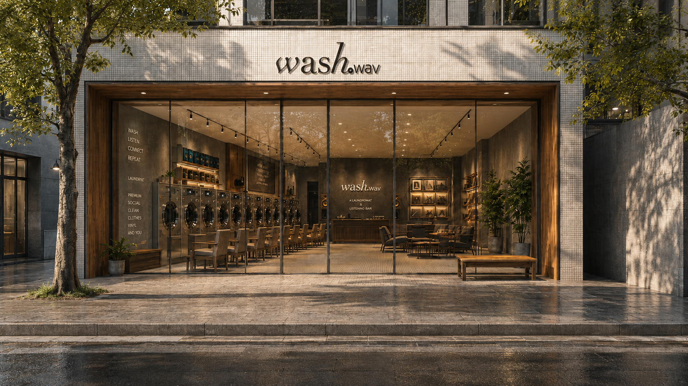
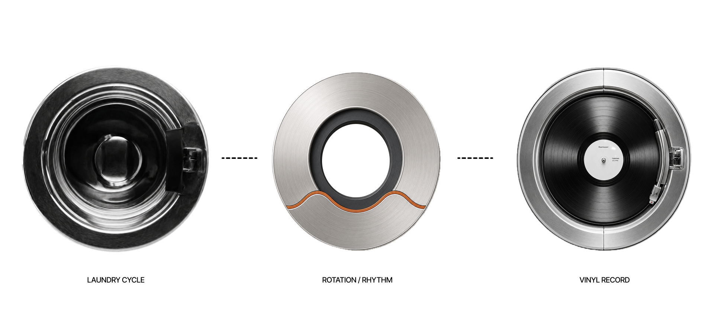
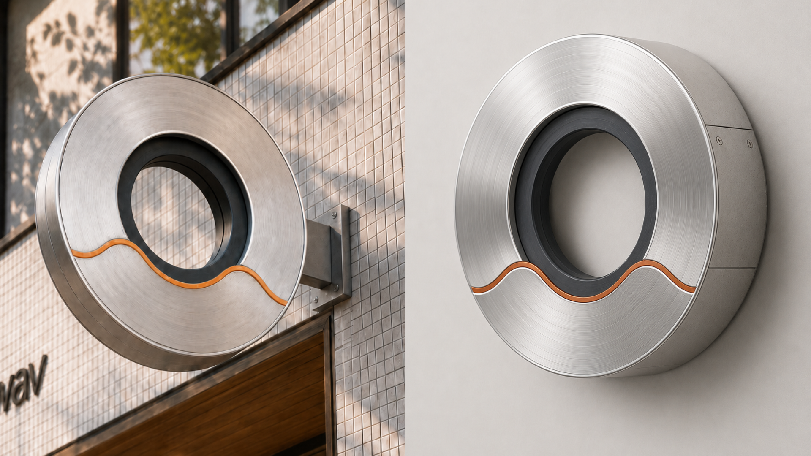
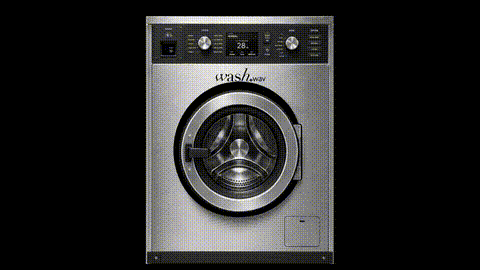
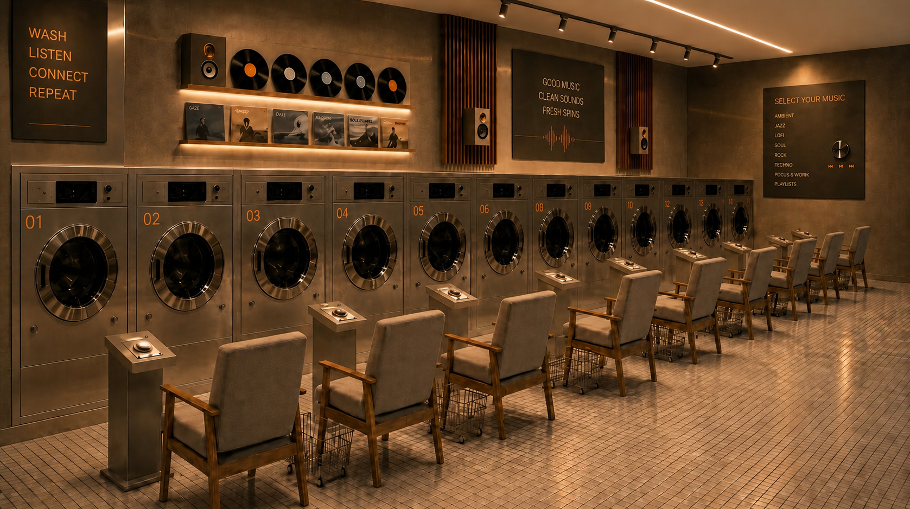
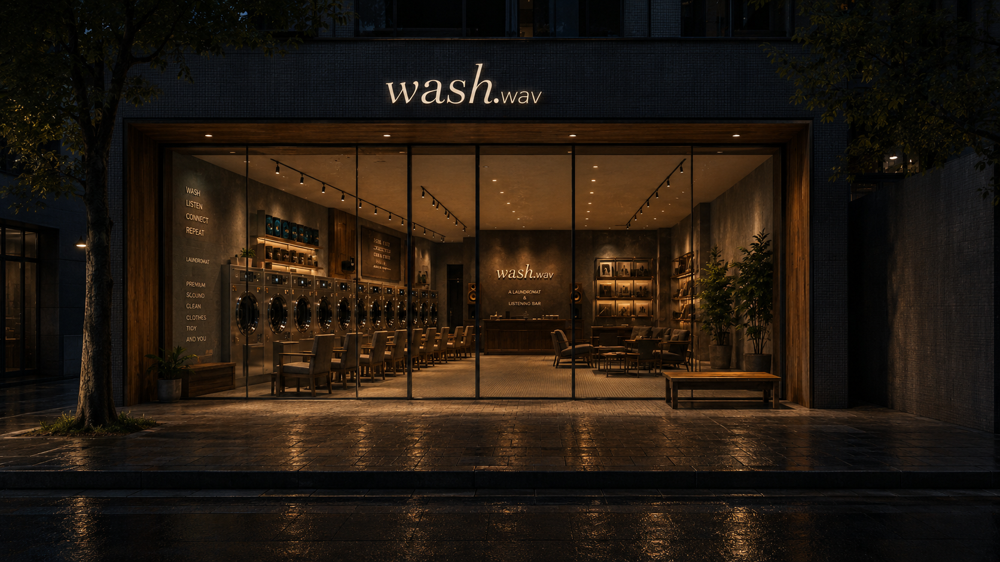

wash.wav
Private Listening Laundromat
A laundromat reimagined as a private listening space, where waiting time becomes an intentional music experience.


wash.wav transforms the laundromat into a private listening space. Each washing machine is paired with an individual chair, allowing users to sit in front of their own machine while selecting a music genre through a dial-based interface. The rotating motion of laundry inside the machine becomes a metaphor for vinyl records, turning the waiting time of washing into a quiet listening ritual.


